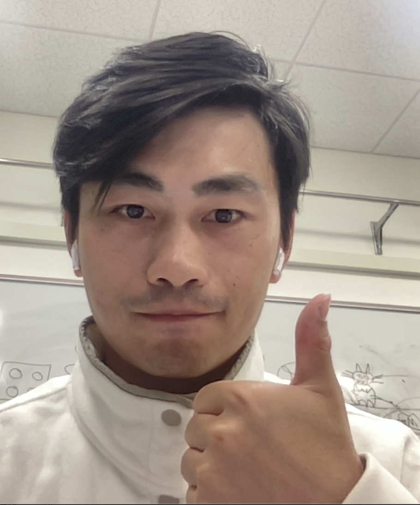

|  |
Xu Ma (马旭)
Email: ma.xu1[at]northeastern.edu Google Scholar Linkedin |
| I am a PhD candidate in the College of Engineering, Northeastern University, USA and work with Prof. Yun Raymond Fu in the SMILE Lab. Before that I spent two years in the Department of Computer Sicence & Engineering, University of North Texas, working with Prof. Song Fu. Many thanks for Prof. Song Fu's kind help and great supports during the time! I received my BS and MS degrees in the College of Information Science and Technology, Nanjing Forestry University, China, advised by Prof. Yingan Liu and Prof. Qiaolin Ye. |
| My research interests are in the areas of Computer Vision, and Machine Learning. I was a research intern at Bell Labs Murry Hill in the summer of 2020 (remotely)， and eBay Computer Vision Group San Jose in 2022. I was the recipient of ICME'20 Best Student Paper Award, SEC'19 Best Paper Award, and Academic Technology Scholar Award from Northeastern University for Fall 2022. |
|
[Mar. 2023] Named as one CVPR 2023 Outstanding Reviewer. [Mar. 2023] I will serve as a reviewer for Workshop on Efficient Deep Learning for Computer Vision and Workshop on Transformers for Vision at CVPR 2023. [Jan. 2023] We have one paper (Image as Set of Points)accepted by ICLR'23 as Oral. [Dec. 2022] I will join Microsoft as a research intern in Spring 2023. [Oct. 2022] Selected as a Top Reviewer for NeurIPS'22. [Sep. 2022] We have one paper on Parameter-efficient Transformer accepted by NeurIPS'22. [Aug. 2022] We have one paper on Video Anomaly Detection accepted by ICDM'22. [Aug. 2022] I have been selected as an Academic Technology Scholar from Northeastern University for Fall 2022. [Apr. 2022] Received the travel grant award for CVPR 2022. [Mar. 2022] I will serve as a reviewer for Efficient Deep Learning for Computer Vision Workshop @ CVPR 2022. [Mar. 2022] One paper on Image Vectorization accepted by CVPR'22 as Oral, thanks to my co-authors! [Feb. 2022] I will join eBay Computer Vision group as a research intern this summer. See you in San Jose. [Jan. 2022] One paper on Point Cloud Analysis accepted by ICLR'22. [Mar. 2021] Two paper accepted by ICME, oral and poster. [Feb. 2021] One paper accepted by IEEE Transactions on Multimedia. [Jan. 2021] Invited as an reviewer for IEEE Signal Processing Letters. [Jan. 2021] I move to Boston and Join Smile Lab. |


Services and Reviews
Reviewer of Journals:
IEEE Transactions on Pattern Analysis and Machine Intelligence (TPAMI)IEEE Transactions on Image Processing (TIP)
IEEE Transactions on Multimedia (TMM)
IEEE Signal Processing Letters (SPL)
IEEE Transactions on Intelligent Vehicles (TIV)
Reviewer of Conferences:
CVPR, ICCV, ECCV, ICLR, NeurIPS, KDD, AAAI, IJCAI, ACM MM, WACV, ICME, FG, ICASSP,
Reviewer of Workshops:
Efficient Deep Learning for Computer Vision (ECV) @ CVPR Transformers for Vision (T4V) @ CVPR
AI and Social Good @ IJCAI
Best paper of SEC 2019
Best student paper of ICME 2020
Outstanding Reviewer of NeurIPS 2022
Outstanding Reviewer of CVPR 2023
Academic Technology Scholar from Northeastern University 2022 Fall
© 2022 Xu Ma. Thanks to Dr. Ce Liu and Dr. Deqing Sun for the template. [Updated: Mar/29/2022]